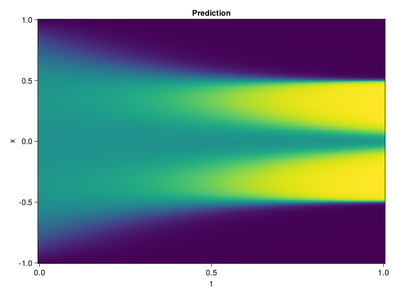

Allen-Cahn Equation with Sequential Training
In this tutorial we are going to solve the Allen-Cahn equation with periodic boundary condition from $t=0$ to $t=1$. The traning process is split into four stages, namely $t\in [0,0.25]$, $t\in [0.0,0.5]$, $t\in [0.0,0.75]$ and $t\in [0.0, 1.0]$.
using ModelingToolkit, IntervalSets
using Sophon
using Optimization, OptimizationOptimJL
@parameters t, x
@variables u(..)
Dₓ = Differential(x)
Dₓ² = Differential(x)^2
Dₜ = Differential(t)
eq = Dₜ(u(x, t)) - 0.0001 * Dₓ²(u(x, t)) + 5 * u(x,t) * (abs2(u(x,t)) - 1.0) ~ 0.0
domain = [x ∈ -1.0..1.0, t ∈ 0.0..0.25]
bcs = [u(x,0) ~ x^2 * cospi(x),
u(-1,t) ~ u(1,t)]
@named allen = PDESystem(eq, bcs, domain, [x, t], [u(x, t)])\[ \begin{align} - 0.0001 \frac{\mathrm{d}}{\mathrm{d}x} \frac{\mathrm{d}}{\mathrm{d}x} u\left( x, t \right) + 5 \left( -1 + \left|u\left( x, t \right)\right|^{2} \right) u\left( x, t \right) + \frac{\mathrm{d}}{\mathrm{d}t} u\left( x, t \right) =& 0 \end{align} \]
Then we define the neural net, the sampler, and the training strategy.
chain = FullyConnected(2, 1, tanh; hidden_dims=16, num_layers=4)
pinn = PINN(chain)
sampler = QuasiRandomSampler(500, (300, 100))
strategy = NonAdaptiveTraining(1, (50, 1))
prob = Sophon.discretize(allen, pinn, sampler, strategy)OptimizationProblem. In-place: true
u0: ComponentVector{Float64}(layer_1 = (weight = [-0.6413819789886475 0.4600154459476471; -1.7825374603271484 -1.5350122451782227; … ; 0.28868404030799866 1.0807480812072754; -1.1360307931900024 1.635526418685913], bias = [0.0; 0.0; … ; 0.0; 0.0;;]), layer_2 = (weight = [0.5434474349021912 -0.12335914373397827 … -0.5267863273620605 -0.5726636052131653; -0.31045278906822205 -0.04038844630122185 … -0.6361204981803894 -0.11425516754388809; … ; 0.09818544238805771 0.23269088566303253 … 0.1423865556716919 -0.7004400491714478; -0.1717950999736786 -0.7093013525009155 … -0.6200106739997864 -0.6145628690719604], bias = [0.0; 0.0; … ; 0.0; 0.0;;]), layer_3 = (weight = [0.6296876072883606 0.10816961526870728 … -0.3101062476634979 0.46420562267303467; 0.13268069922924042 0.663302481174469 … -0.6959627270698547 0.11596685647964478; … ; -0.7211589813232422 -0.3297153115272522 … -0.4855116605758667 -0.2813319265842438; -0.6556479334831238 -0.6232561469078064 … -0.14713500440120697 0.45712873339653015], bias = [0.0; 0.0; … ; 0.0; 0.0;;]), layer_4 = (weight = [0.5451478362083435 -0.5072138905525208 … 0.7099451422691345 -0.5244798064231873; -0.20050351321697235 0.06928569823503494 … 0.4908115863800049 -0.6588531136512756; … ; 0.21784840524196625 0.02719089388847351 … -0.2658194303512573 -0.6433424949645996; 0.12274367362260818 0.05779312551021576 … 0.4624565839767456 0.08238181471824646], bias = [0.0; 0.0; … ; 0.0; 0.0;;]), layer_5 = (weight = [-0.2985913157463074 0.31743624806404114 … 0.4005068242549896 0.33660888671875], bias = [0.0;;]))We solve the equation sequentially in time.
function train(allen, prob, sampler, strategy)
bfgs = BFGS()
res = Optimization.solve(prob, bfgs; maxiters=2000)
for tmax in [0.5, 0.75, 1.0]
allen.domain[2] = t ∈ 0.0..tmax
data = Sophon.sample(allen, sampler)
prob = remake(prob; u0=res.u, p=data)
res = Optimization.solve(prob, bfgs; maxiters=2000)
end
return res
end
res = train(allen, prob, sampler, strategy)u: ComponentVector{Float64}(layer_1 = (weight = [-0.8807695555394066 0.3191362101780926; -2.710223475492922 -1.265781203300749; … ; 0.13720040298486652 1.2983986288630045; -1.8683949257766235 1.000779715415548], bias = [0.8072918602437741; 0.1273682788743198; … ; 0.06942037597760346; -0.10755607998660299;;]), layer_2 = (weight = [0.4876088869075903 -0.6169263477232244 … -0.47248689796778043 -0.15285233768916826; -0.3502829907910176 -0.5840560466018168 … -0.47895915490338886 -0.5178251011739975; … ; -0.10469377808059452 0.43474845956016284 … 0.43052283625441135 -1.1916417946209228; -0.25741446022497316 -0.7305945287873205 … -0.45378918737021506 -0.7483685927306741], bias = [-0.049070742412567855; 0.20923626680365004; … ; 0.3305002338023285; 0.24982146377649186;;]), layer_3 = (weight = [1.0088357014599578 -0.2452120106730934 … 0.06527179003095351 0.041973737852412554; 0.680149241836622 0.6372893046454208 … -0.34370788655092693 0.3783729384241367; … ; -0.9414622984751538 -0.04562204032474116 … -0.3886338026103996 -0.4286663006569729; -1.6730402422268447 -0.1256619763262083 … -0.029858912513485814 0.28864543355900407], bias = [-0.2146480880233439; 0.16820778404033596; … ; -0.08881271482278595; 0.40312110464714057;;]), layer_4 = (weight = [1.3997731140356717 -0.6277431925350023 … 0.879822726141064 -1.1469459955832046; 0.27881589623516473 -0.040568795963544325 … 1.3762023542319244 0.3760129855364544; … ; 0.32467492463725517 0.013459954208647162 … -0.3663630788348478 -0.7234092846452982; 1.3819818152017231 -0.2935238982444967 … 0.4393593403919682 -0.34733841745775074], bias = [-0.15464297586673384; -0.01976686117094356; … ; -0.2774282676947354; -0.27858398992575006;;]), layer_5 = (weight = [-0.8101498826850206 0.8361439558229676 … 0.10370058128253566 0.5816453048674699], bias = [-0.6603939876106787;;]))Let's plot the result.
using CairoMakie
phi = pinn.phi
xs, ts = [infimum(d.domain):0.01:supremum(d.domain) for d in allen.domain]
axis = (xlabel="t", ylabel="x", title="Prediction")
u_pred = [sum(pinn.phi([x, t], res.u)) for x in xs, t in ts]
fig, ax, hm = heatmap(ts, xs, u_pred', axis=axis)